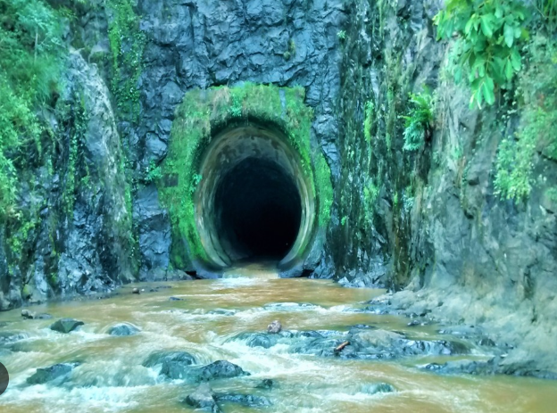
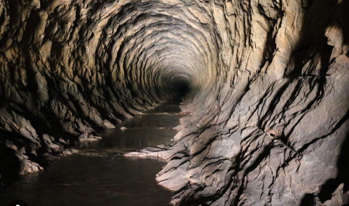
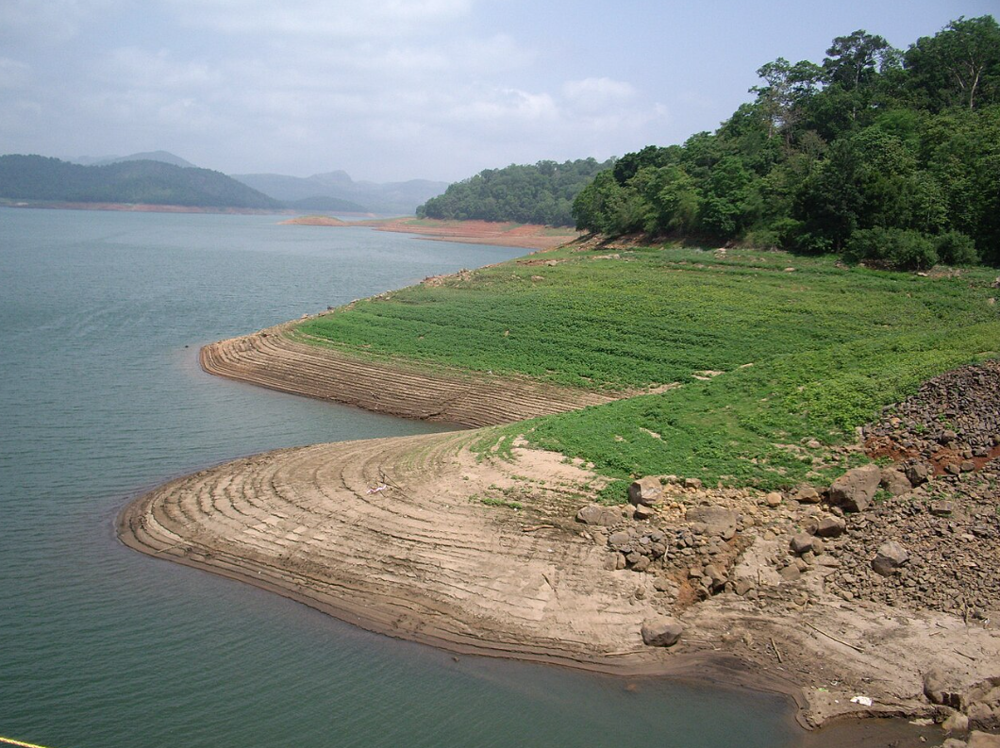
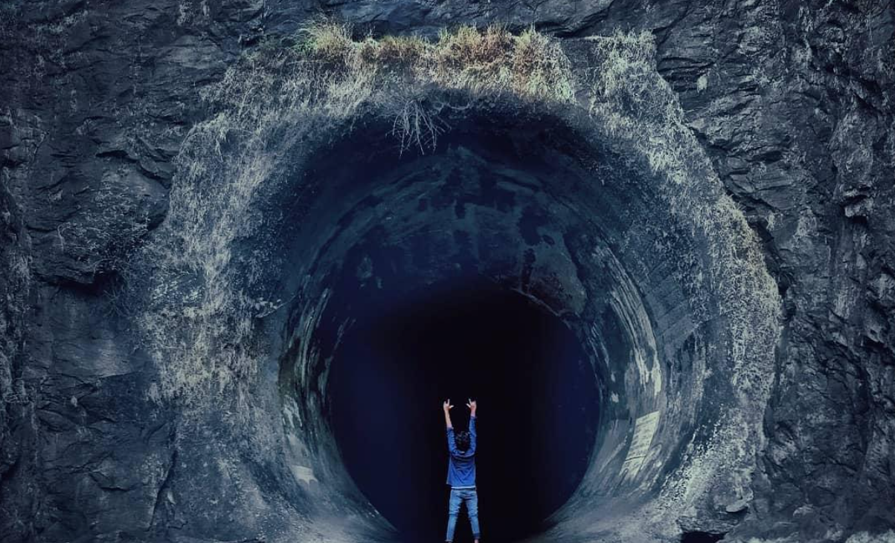

Anchuruli is a scenic tourist spot in the Idukki district of Kerala, known for its beautiful tunnel and natural surroundings. The Anchuruli tunnel is a long circular passage built for water flow, and it attracts visitors with its unique structure and cool atmosphere. The area is surrounded by forests, hills, and water, making it a peaceful place for nature lovers and adventure seekers.
Anchuruli is also famous for its thuruthu (small island), which appears when the water level is low. Visitors can explore this island and enjoy the calm and quiet environment. The combination of the tunnel, water, and greenery makes Anchuruli a special and attractive destination in Idukki.





Anchuruli is a famous tourist destination in Idukki District, Kerala. It is well known for its spectacular tunnel, waterfalls, beautiful reservoir and lush green forests. The place attracts nature lovers, photographers and adventure seekers because of its scenic beauty and peaceful surroundings.
The name "Anchuruli" comes from the Malayalam words "Anchu" (five) and "Uruli" (a round cooking vessel). The waterfall is believed to resemble the shape of five stacked urulis, giving the place its unique name.
Anchuruli became well known after the construction of the Idukki Hydroelectric Project. The famous tunnel was built to carry water from the Kallar River to the Idukki Reservoir. Today, it is one of Kerala's popular eco-tourism destinations.
The Anchuruli Tunnel is about 5.5 kilometres long and was constructed as part of the Idukki Hydroelectric Project. It carries water into the Idukki Reservoir and is one of the major attractions of the region.
The region is rich in evergreen forests, medicinal plants, bamboo and many native plant species. The lush greenery makes Anchuruli an ideal destination for nature lovers.
Today, Anchuruli is one of Idukki's most popular tourist destinations. It is famous for its tunnel, waterfalls, adventure tourism and breathtaking natural scenery, attracting visitors from across India.